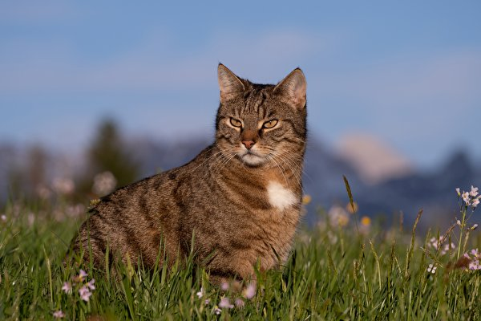

Навигация по сайту
Выберите один из разделов для получения информации.
Закладки (внутренняя навигация по странице)
Глава 1
Плюсы заведения кошки
- Эти животные лечат. Их мурлыканье воздействует на организм человека примерно так же, как ультразвуковое лечение!
- Они независимы. В отличие от собак, они могут спокойно обходиться без человека, пока он на работе.
- Их не нужно выгуливать.
- У них феноменально чувствительный нос. Вы можете не почувствовать запах газа, а кошки почувствуют. Так они предупредят хозяев об утечке газа.
- Они долго живут. Если за ними хорошо ухаживают, они живут 15-20 лет, а то и дольше.
- Они преданные друзья. Даже если вы будете знать все повадки, вы все равно не устанете удивляться чему-то новому.
- Они компактны. Вам не придется выбирать кошку по размеру: независимо от породы, в квартире она не будет чувствовать себя стесненной.
Минусы заведения кошки
- Кошки не любят бывать вне дома. Хозяин может любить путешествовать, а его кошка – нет.
- С ними возникает много сложностей в плане дрессировки. Приучение к лотку и когтеточке – непростая задача.
- Они очень активны ночью. Днем они спят, а ночью бодрствуют.
- Они часто не слушаются. Животное может не отзываться на кличку.
- Многие кошки постоянно линяют. Уборку в квартире придется делать чаще.
- Они могут быть переносчиками опасных заболеваний. Это, например, токсоплазмоз.
- Они очень любопытны. Им хочется обойти каждый угол.
Как завести кошку?
- Выбор кошки
- Порода: изучите особенности разных пород, чтобы выбрать подходящую по темпераменту и характеру.
- Возраст: котята требуют больше внимания и ухода, чем взрослые кошки.
- Здоровье: убедитесь, что кошка здорова, имеет прививки и проверена ветеринаром.
- Оборудование
- Лоток: с наполнителем, который нравится кошке.
- Миски для воды и еды: устойчивые и с удобной формой.
- Спальное место: удобное и теплое.
- Когтеточка: для заточки когтей и предотвращения порчи мебели.
- Игрушки: для развлечения и удовлетворения инстинктов кошки.
- Подготовка дома
- Убрать все опасные предметы: ядовитые растения, лекарства, химические средства.
- Обеспечить доступ ко всем комнатам: кошка должна иметь возможность свободно перемещаться.
- Предусмотреть место для кошачьего туалета: в тихом и уединенном месте.
- Обеспечить безопасность: закрыть окна и балконы, чтобы кошка не могла выпасть.
- Уход
- Выбор корма: сухой, влажный, натуральный.
- Расчесывание шерсти: регулярно, особенно для длинношерстных кошек.
- Регулярные визиты к ветеринару: для профилактических осмотров и вакцинации.
- Профилактика паразитов: регулярная обработка от блох, клещей и глистов.
Глава 2
Бирмы — мудрые и довольно спокойные, часто их путают с «тайскими» коллегами. Они схожи внешне (в частности, и те, и другие наделены узнаваемым сиамским окрасом), и долгое время обитали в одной компании у древних тайских храмов. Но всё-таки — очень разные!
Короткошёрстные британцы — сказочные в прямом смысле этого слова. Именно они стали прототипом Чеширского кота из популярной сказки английского писателя Льюиса Кэролла «Алиса в стране чудес».
Невская маскарадная кошка — в честь реки, маскарадные — из-за необычного окраса мордочки, напоминающего карнавальную маску. Ласковые, но довольно серьёзные и гордые кошки быстро привязываются к своим ценят и очень трепетно относятся к домашнему уюту.
Глава 3
Просмотр изображения
Нажмите на миниатюру, чтобы открыть большое изображение в новом окне.
К заголовку Закладки ....Глава 4
Таблица
| Британская короткошерстная кошка | ||||
|
Ссылки Подробнее про данную породу Купить кошку |
|
|||
| Про британских котов говорят: вряд ли найдутся колени, на которых им не понравилось бы сидеть. Правда, есть условие: желание расположиться на коленях должен изъявить сам питомец. Еще утверждают, что на квадратный сантиметр тела у британской короткошерстной больше волосков, чем у любой другой породы. Благодаря этому качеству кот британец может соперничать с грелкой или теплым пледом. | ||||